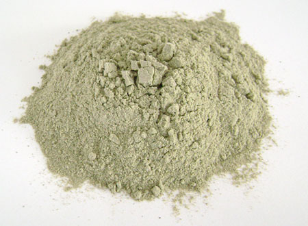

Мескалин (2-(3,4,5-триметоксифенил)-этиламин).
Один из немногих психоделиков, которые можно найти в природе, ведь он содержится в кактусах пейот. Кроме пейота в-во содежрится, в кактусах Сан-Педро, которые созревают куда быстрее. О свойствах данного вещества было известно еще индейцам, которые использовали его для своих различных обрядов. Как и любой психоделик, мескалин способен вызывать галлюцинации, эйфорию, состояние измененного сознания. Среди побочных негативных эффектов стоит отметить тахикардию ( если существуют проблемы с сердцем, то прием мескалина может стать для вас последним), расширение зрачков ( мусора увидев ваши глаза, могут забрать вас в места не столь отдаленные, какими они кажутся, на первый взгляд), рвоту, головную боль, чувство тревоги и страха. Средняя дозировка мескалина составляет 300 мг, действие его приблизительно равно 8 часам, пик действия наступает через 4 часа. Если же вы вдруг поймаете бэдтрип, то сняться с него вам помогут нейролептики и некоторые ноотропы, хотя вероятность этого очень мала. Как обычно все сугубо индивидуально. Купить это в-во можно на рампах, выращивать же кактусы самому с целью получения мескалина не очень удачная затея. Конечно, это осуществимо, но, прорастая в некомфортных условиях, в них будет накапливаться очень малое количество необходимого вам вещества, да и растут они чрезвычайно медленно.
peyote(mescaline).pdf